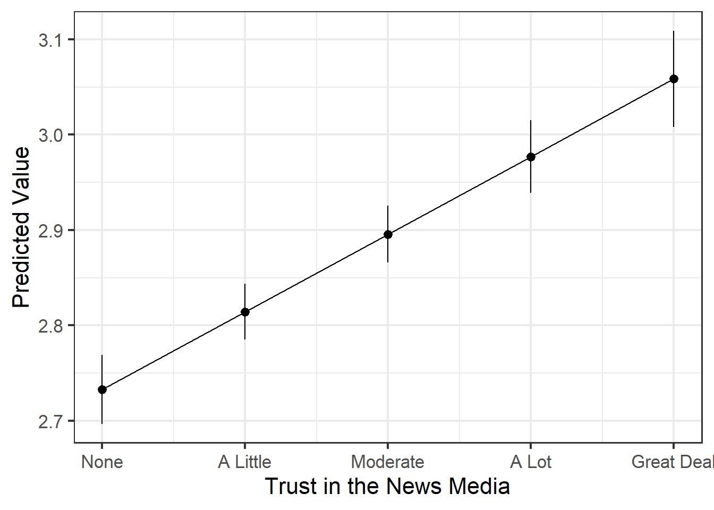
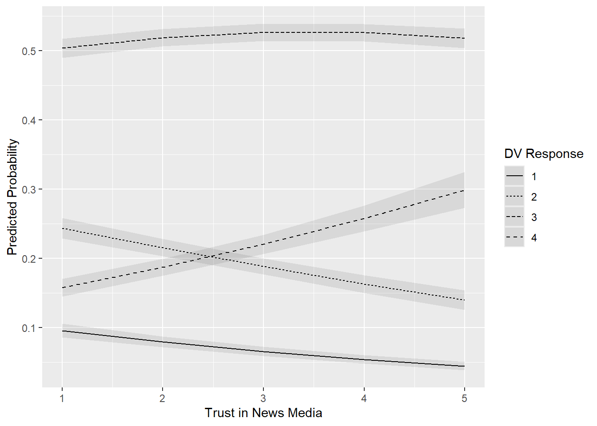

#Packageslibrary(flextable)library(modelsummary)library(marginaleffects)library(rio)library(tidyverse)library(patchwork)library(parameters)library(broom)#Data & Data cleaninganes <-import("./data/anes_small.rds")anes <- anes |>mutate(news_trust =ifelse(V201377 %in%c(-9,-8), NA, V201377),interest =case_when( V202406 ==1~4, V202406 ==2~3, V202406 ==3~2, V202406 ==4~1),education =ifelse(V201511x <0, NA, V201511x), union =ifelse(V201544 <0, NA, V201544), union =factor(union, levels =c(2, 1), labels =c("Not a Union HH", "Union Household")), sex =ifelse(V201600 ==-9, NA, V201600), sex =factor(sex, levels =c(1, 2), labels =c("Male", "Female")), race_eth =ifelse(V201549x <0, NA, V201549x), race_eth =factor(race_eth, levels =c(1,2,3,4,5,6), labels =c("White", "Black", "Hispanic", "Asian", "Native American", "Multiple Races")), age =ifelse(V201507x ==-9, NA, V201507x))# Coefficient Names for later modelsummarycoef_names <-c("(Intercept)"="Intercept", "news_trust"="Trust in News Media", "age"="Age", "sexFemale"="Sex (0 = Male, 1 = Female)", "education"="Education", "race_ethBlack"="Black", "race_ethHispanic"="Hispanic", "race_ethAsian"="Asian", "race_ethNative American"="Native American", "race_ethMultiple Races"="Multiple Races")
1
Table formatting
2
Regression tables
3
Predicted values, marginal effects, comparisons
4
Data importing/exporting
5
Data manipulation & plotting
6
Combining plots
7
Standardized coefficients
8
Model summaries
9
If we do not need to recode the variable in any other way, then an ifelse() command is often the easiest way to convert observations with missing value numeric codes to NA.
10
We can rename the variables being presented in a regression table by including a coef_rename = c() bit of syntax in the modelsummary() command. We can also create an object with these names and then reference that in the command instead (e.g., coef_map = coef_names ). This can save us time if we are producing multiple tables with the same exact IVs. But, be careful: coef_map is type sensitive, so the names of the variables (e.g., “(Intercept)”, “race_ethBlack”) need to be correct or that entry won’t show.
You learned how run linear (OLS) and (binomial) logistic regression models in Statistics II. These models are appropriate for continuous and binary dependent variables. What if your DV is ordinal in nature, however? I discussed this question in Chapter 11 where I suggested there are three basic possibilities:
Run and interpret the OLS model, put an ordinal logistic model in an appendix (the “cover your bases” strategy)
1 I will be using “ordered logistic” and “ordinal logistic” interchangeably in this chapter.
This chapter focuses on how to run an interpret an ordinal logistic model in case you wish to go down either the 2nd or 3rd pathways.
20.1 Example
I’ll use data from the 2020 American National Elections Study for this example. My focus will be on a measure of a person’s political interest. Respondents were asked the following question on the post-election wave of the survey: “How interested would you say you are in politics? Are you very interested, somewhat interested, not very interested, or not at all interested?” I have recoded the variable so that a score of 1 = not at all interested … and 4 = very interested in politics. Here is a simple tabulation of this data:
table(anes$interest)
1 2 3 4
556 1389 3622 1813
Let’s say we are interested in the following research question: do people who trust the news media report more interest in politics than those that do not trust the news media?2 The ANES also asked a question on this front: “In general, how much trust and confidence do you have in the news media when it comes to reporting the news fully, accurately, and fairly?”. Respondents could indicate no trust at all (1 = “none”) up to “a great deal” (=5) of trust. In practice, respondents were fairly non-trusting here.
2 Interest is implicitly being caused by trust in the media here. That may not be the most plausible causal story here. We might instead wonder whether political interest causes trust instead! An interest in politics is something that seems to develop during adolescence after which time it becomes highly stable (see work by Markus Prior). However, I’ll ignore that possibility and simply assume that changes in news trust are at least plausibly exogeneous to changes in political interest. In this particular example, the news trust measure was asked on the pre-election wave of the ANES (sometime in August or September 2020) and the interest measure was asked on the post-election wave (sometime in November).
table(anes$news_trust)
1 2 3 4 5
2404 1830 2352 1210 464
How should we examine our question? One thing we could do is perform a multiple linear regression model in which we predict political interest with news trust and potential confounding variables. For instance:
model_ols <-lm(interest ~ news_trust + age + sex + education + race_eth, data = anes)modelsummary(model_ols, stars = T, coef_map = coef_names,gof_map =c("nobs", "r.squared", "adj.r.squared"), notes ="OLS coefficients with SEs in parenthesis. Ref cat for Race = White respondent")
1
See comment on the very first code chunk in this document.
tinytable_pnjnp37da60arst7yyjd
(1)
+ p < 0.1, * p < 0.05, ** p < 0.01, *** p < 0.001
OLS coefficients with SEs in parenthesis. Ref cat for Race = White respondent
Intercept
1.856***
(0.048)
Trust in News Media
0.081***
(0.008)
Age
0.009***
(0.001)
Sex (0 = Male, 1 = Female)
-0.168***
(0.019)
Education
0.150***
(0.009)
Black
-0.136***
(0.035)
Hispanic
-0.045
(0.035)
Asian
-0.205***
(0.054)
Native American
0.022
(0.069)
Multiple Races
0.129*
(0.055)
Num.Obs.
6942
R2
0.106
R2 Adj.
0.105
There is a positive and statistically significant relationship between our news trust variable and the DV. We expect the average value of the political interest variable to increase by around 0.08 scale points with each one unit increase in the news trust variable (holding “constant” the effects of the other predictors). Here is a plot of the predicted values from this model: the average on the political interest variable we expect to observe for people at each level of the IV:
Show the code
predictions(model_ols, newdata =datagrid(news_trust =c(1:5))) |>ggplot(aes(x = news_trust, y = estimate)) +geom_pointrange(aes(ymin = conf.low, ymax = conf.high)) +geom_line() +labs(x ="Trust in the News Media", y ="Predicted Value") +scale_x_continuous(labels =c("None", "A Little", "Moderate", "A Lot", "Great Deal")) +theme_bw(16)
1
I’m using geom_pointrange() to plot the predicted value and its CI and then geom_line() to connect those values rather than geom_line() to plot the predictions and geom_ribbon() to plot the CIs. Why? Eh, I kind of like how it looks in this instance. There are only five values of the IV, for instance, so plotting each predicted value with a marker strikes me as easier to read in this example. You should choose aesthetics to help you accurately and effectively communicate.
2
This allows me to override the default labels for each marker, which would simply be the numbers of each level of the variable (1,2,3…). Providing the labels is more informative here.

What’s the (potential) problem here? We are assuming that the DV is on an interval/ratio scale in which the difference between levels is equivalent in meaning. However, is the amount of change in political interest when moving from a response of “not at all interested” to “not very interested” actually the same as the degree of change in political interest when moving from “somewhat interested” to “very interested”? Giving each level a numeric value separated by one (1,2,3,4) implies so, but that is ultimately an assumption on our (and our model’s) part. In practice, many researchers are willing to make this assumption. It is likely not problematic in situations where the ordered DV has 5 or more categories…but likely isn’t always.
20.2 Ordered/Ordinal Logistic Regression
An alternative we could turn to if this concerned us is an ordered or ordinal logistic regression. Here, we are interested in modeling the probability that an observation is in a given category (e.g., “somewhat interested”) rather than the preceding categories (e.g., “not at all” and ’not very” interested). We do so by modeling the log of the odds of this being the case, hence this being an ordered logistic regression model. See this website for additional information on this points.
We cannot perform an ordered logistic regression without an extra library. Here, I will use the polr() command from the MASS library. I will not first load the MASS library because it has a conflict with the dplyr package in the tidyverse (both have a select() command). One could alternatively set up the preamble to their R Script file such that MASS is loaded first and then tidyverse or dplyr to avoid this problem.
Step one here is to convert our DV into a factor variable as this is a requirement of the command. Step 2 is to run our model using the polr() function.
#Convert DV to factoranes <- anes |>mutate(interest_fct =factor(interest, levels =c(1,2,3,4)))# Modelmodel_ologit <- MASS::polr(interest_fct ~ news_trust + age + sex + education + race_eth, data = anes)
Let’s take a look at the output:
summary(model_ologit)
Re-fitting to get Hessian
Call:
MASS::polr(formula = interest_fct ~ news_trust + age + sex +
education + race_eth, data = anes)
Coefficients:
Value Std. Error t value
news_trust 0.20572 0.019673 10.4569
age 0.02019 0.001402 14.4061
sexFemale -0.41803 0.045991 -9.0892
education 0.34461 0.021430 16.0802
race_ethBlack -0.31656 0.081984 -3.8612
race_ethHispanic -0.09015 0.082138 -1.0975
race_ethAsian -0.46907 0.127747 -3.6719
race_ethNative American 0.07707 0.161727 0.4765
race_ethMultiple Races 0.29943 0.129674 2.3091
Intercepts:
Value Std. Error t value
1|2 -0.2386 0.1185 -2.0135
2|3 1.3414 0.1156 11.6032
3|4 3.6853 0.1238 29.7771
Residual Deviance: 15892.39
AIC: 15916.39
(1338 observations deleted due to missingness)
The coefficient values are provided first. These are log of the odd estimates and so we can only really use them to understand the direction of a relationship. A positive value here indicates that we expect an observation to be in a higher numbered category of the DV as the IV increases in value. A negative value indicates the inverse. Here, for instance, we expect people who trust the news more to be more interested in politics (net of the influence of the other predictor variables.
We next get a section called “Intercepts”. These values are also often called “cut points”. You will get as many Intercepts here as there are categories of the DV minus 1. My DV has four categories, hence I get three cut points. We seldom worry about or interpret these values; you can see the link above for a more formal definition.
How do our results compare to the OLS model from earlier?
Show the code
models <-list("OLS"= model_ols, "O.Logit"= model_ologit)modelsummary(models, stars = T, coef_map = coef_names,gof_map =c("nobs", "r.squared", "adj.r.squared"), notes ="OLS or Ordered Logistic coefficients with SEs in parenthesis. Ref cat for Race = White respondent")
1
The cut points or intercept values from an ordered logistic model are printed by default by modelsummary(). They would something like: “1|2”, “2|3”, etc., and would, kind of annoyingly, be the first estimates provided in the table. I did not include those values in my coef_names earlier, so they are omitted from my output. If I wanted them in the table, I’d use coef_map() to put them at the end of my other coefficients.
tinytable_26pmpaonejtxutg1dyen
OLS
O.Logit
+ p < 0.1, * p < 0.05, ** p < 0.01, *** p < 0.001
OLS or Ordered Logistic coefficients with SEs in parenthesis. Ref cat for Race = White respondent
Intercept
1.856***
(0.048)
Trust in News Media
0.081***
0.206***
(0.008)
(0.020)
Age
0.009***
0.020***
(0.001)
(0.001)
Sex (0 = Male, 1 = Female)
-0.168***
-0.418***
(0.019)
(0.046)
Education
0.150***
0.345***
(0.009)
(0.021)
Black
-0.136***
-0.317***
(0.035)
(0.082)
Hispanic
-0.045
-0.090
(0.035)
(0.082)
Asian
-0.205***
-0.469***
(0.054)
(0.128)
Native American
0.022
0.077
(0.069)
(0.162)
Multiple Races
0.129*
0.299*
(0.055)
(0.130)
Num.Obs.
6942
6942
R2
0.106
R2 Adj.
0.105
The coefficient values are different, but of course they are - we’re modeling different things (averages vs. log of the odds). However, the direction of relationships are all identical. The statistical significance is also the same in each case. That is not always going to happen, but here we have two models producing the same basic story. Only, the OLS model yields coefficient values we can directly interpret while the ordered logistic model does not. 3
3 We also do not get R2 or adjusted R2 values either. One could obtain a Nagelkerke R2 for this model via the performance package, e.g., performance::nagelkerke_r2(model_ologit) .
If we want to actually understand what the coefficients are telling us, then we can turn to the marginaleffects package and its predictions() and slopes() commands.
Here, we have the predicted probability of a respondent being in each of the four interest categories (group) by their score on the trust in the news variable (news_trust) while holding the other covariates constant at their mean or mode. This type of data is best shown via a figure:
ggplot(preds_ologit, aes(x = news_trust, y = estimate, linetype = group)) +geom_line() +geom_ribbon(aes(ymin = conf.low, ymax = conf.high), alpha =0.1) +labs(x ="Trust in News Media", y ="Predicted Probability", linetype ="DV Response")

Here, we can see that trust in the news media seems to mostly matter by shifting people away from a score of 1 or 2 and towards a score of 3. We could also calculate and plot the average marginal effects, but the predicted values are probably more informative and interesting overall.
20.2.1 Assumptions
We can assess multicollinearity with the vif() command from the car package:
The other critical assumption for an ordered logistic model is the proportional odds assumption. Per this site:
One of the assumptions underlying ordinal logistic (and ordinal probit) regression is that the relationship between each pair of outcome groups is the same. In other words, ordinal logistic regression assumes that the coefficients that describe the relationship between, say, the lowest versus all higher categories of the response variable are the same as those that describe the relationship between the next lowest category and all higher categories, etc. This is called the proportional odds assumption or the parallel regression assumption. Because the relationship between all pairs of groups is the same, there is only one set of coefficients. If this was not the case, we would need different sets of coefficients in the model to describe the relationship between each pair of outcome groups.
There is a specific test for this available in the brant library. See here:
library(brant)brant(model_ologit)
------------------------------------------------------------
Test for X2 df probability
------------------------------------------------------------
Omnibus 54 18 0
news_trust 2.36 2 0.31
age 22.29 2 0
sexFemale 5.65 2 0.06
education 16.08 2 0
race_ethBlack 2.85 2 0.24
race_ethHispanic 4.04 2 0.13
race_ethAsian 0.18 2 0.91
race_ethNative American 1.21 2 0.55
race_ethMultiple Races 0.71 2 0.7
------------------------------------------------------------
H0: Parallel Regression Assumption holds
The null assumption (stated at the bottom) is that the assumption holds. We can look at the “probability” (i.e,. p-value) column to examine the assumption and, in particular, the row for the Omnibus row. Our p-value is well below 0.05 so our assumption does not appear to hold. Oh no! Wait…oh no? Well, here’s the problem with this test: much like any null effects test, it can become trivially easy to reject the null when we have a lot of data. In other words, with lots of data (like, in a model with 6942 observations), we can “detect practically non-meaningful deviations from the assumption” (source). That link and the one from above discuss some alternative ways of assessing this assumption, but I wouldn’t worry too much about this if you wanted to run an ordered logistic model for your thesis. We’re getting into some quite advanced territory with materials you were not trained on. Per my discussion in Chapter 11 , I’d largely tell you to just perform the OLS model and, if you want to cover your bases, put the ordered logistic model in an appendix.